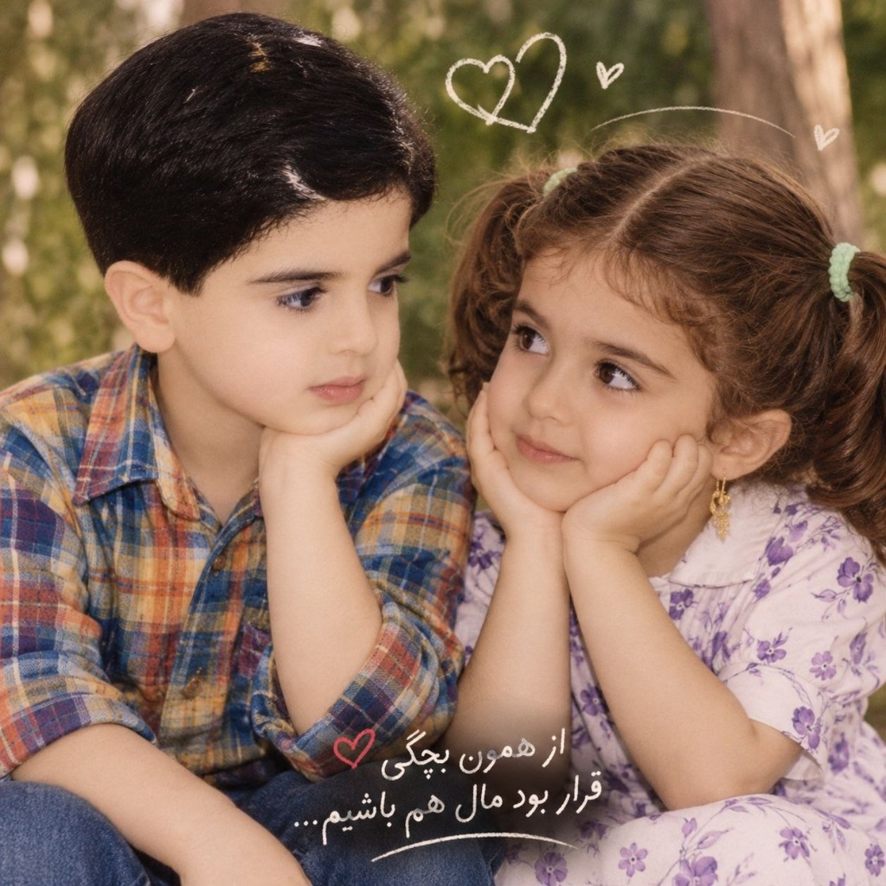
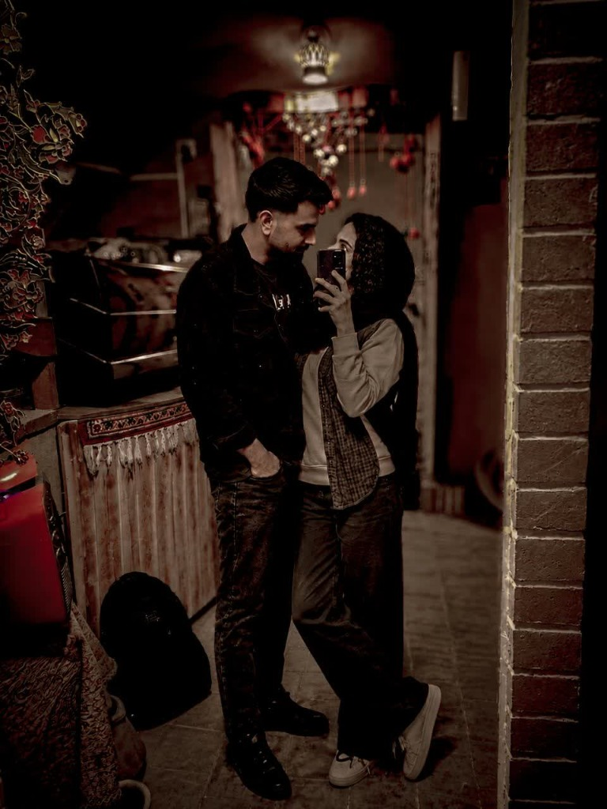

🤍
برای فاطمهٔ عزیزم
صفحه رو لمس کن تا قصهمون شروع بشه...
ALIREZA & FATEMEH
قصهای که از کودکی به امروز رسید


«از همون بچگی قرار بود مال هم باشیم...»
✨ روی عکس بزن تا ببینی چطور بزرگ شدیم
«قصهای که از کودکی شروع نشد، اما به کودکی رسید...»
در حال نوشتن حرفهای دلم برای تو...
نمایش کامل متن
•
نوشتن دوباره
▶
صدای قصهی ما
شب ۲ (امیر تتلو)